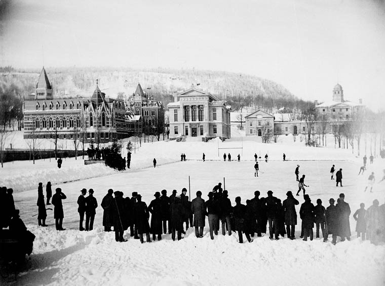

O hóquei sobre o gelo foi criado no Canadá em 1834, como um derivado do hóquei em campo. Os primeiros jogos, de caráter informal, foram realizados por soldados britânicos em Kingston, Ontário, e Halifax, Nova Escócia, sobre espelhos de água congelados, como rios e lagos, durante o rigoroso Inverno canadense. Como um derivado direto do hóquei de campo, tacos curvados e bolas de borracha eram os principais equipamentos de jogo.

Em 1875, o primeiro jogo em recinto coberto foi organizado em Montréal, e em 1877, sete estudantes da Universidade McGill criaram as primeiras regras para o esporte. A bola de borracha foi substituída por um disco de madeira, e cada equipe possuiria nove jogadores (mais os reservas). O esporte rapidamente espalhou-se pelo país. Em 1883, esteve presente no festival de Inverno de Montréal, tendo participado dos festivais de Inverno da cidade pelos próximos anos. Ao longo da década de 1880, muitas equipes de hóquei foram criados no país. Em 1898, o então Governador Geral do Canadá, Lord Stanley of Preston (cujos filhos eram fãs de hóquei), compareceu ao festival de Inverno, e ficou muito impressionado com o esporte, tanto que achou que deveria existir um troféu para a melhor equipe de hóquei, e Stanley doou um troféu de prata, que seria dado todo os anos à equipa vencedora do Canadá. Actualmente, a Stanley Cup é dada à equipe vencedora da NHL. Por volta de 1895, os primeiros jogos de hóquei sobre o gelo nos Estados Unidos foram organizados.
Origens
As origens do hóquei no gelo datam muito antes disso. Quem inventou o hóquei no gelo e quando?
hóquei no gelo desenvolvido a partir de "stick-and-ball" jogos que foram jogados no Reino Unido até o século XVII. O primeiro jogo deste tipo jogado no gelo foi chamiare (shinty), na Escócia, em 1608. Um jogo semelhante, bandy, foi jogado no gelo na Inglaterra por volta da mesma época. Mas quem inventou o hóquei no gelo, e quando, foi há muito debatido. alguns dizem que o primeiro jogo de hóquei no gelo foi jogado no início de 1800 em Windsor, Nova Escócia (Canadá), na King's College School. Os alunos adaptaram hurley (hurling), um jogo de campo irlandês, em um jogo jogado no gelo. Diz-se que imigrantes escoceses e irlandeses no Canadá, bem como o exército britânico com sede no Canadá, começaram a praticar o desporto pouco tempo depois., Outros dizem que foram os índios Mi'kmaq na Nova Escócia que começaram a jogar um jogo de hóquei no gelo-usando um bastão e um bloco de madeira quadrado — também baseado no jogo Irlandês de hurley.
Hóquei nas Olimpíadas
O hóquei no gelo começou a ser disputado nos Jogos Olímpicos na edição de Verão de 1920, em Antuérpia. Com a criação dos Jogos Olímpicos de Inverno, deixou de ser disputado em edições de verão, sendo disputado até hoje junto com as outras modalidades olímpicas de inverno.